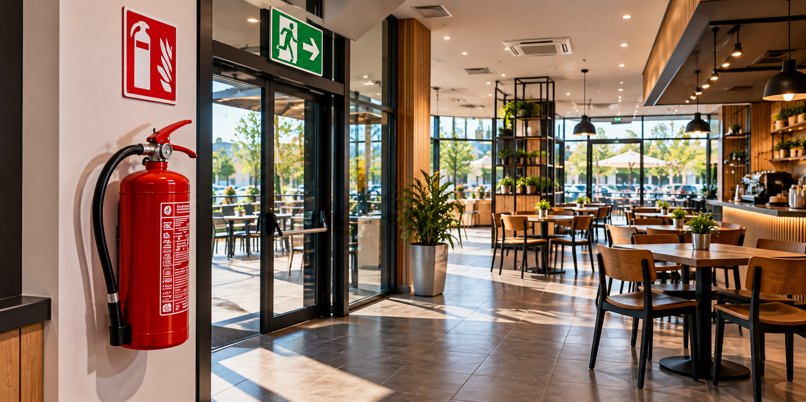
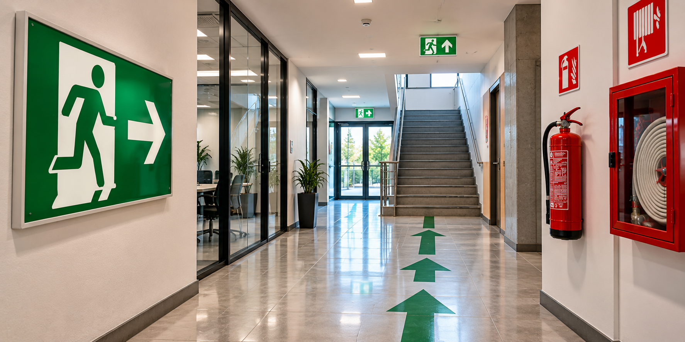

Servicios profesionales para empresas, comercios, industrias y obras de construcción. Prevención, documentación técnica y asesoramiento adaptado a las características de cada actividad.
Soluciones profesionales para obras, empresas, comercios e industrias de San Luis.
Elaboración de Programas de Seguridad de acuerdo con las características, etapas, tareas y riesgos específicos de cada obra.

Informes técnicos de Higiene y Seguridad para habilitación y regularización de comercios y establecimientos.
Estudios de carga de fuego y evaluación de condiciones de protección contra incendios.

Planes de evacuación y documentación gráfica adaptada a las características de cada establecimiento.
Mediciones y evaluaciones de condiciones ambientales en los lugares de trabajo.
Asistencia en relevamientos, documentación y declaraciones relacionadas con riesgos laborales.
Asesoramiento para selección, registro y gestión de Elementos de Protección Personal.
Asesoramiento y seguimiento preventivo para empresas, establecimientos y actividades laborales.
Soy Fernando Rodríguez, Licenciado en Higiene y Seguridad en el Trabajo, matriculado en la Provincia de San Luis.
Desarrollo servicios profesionales para obras, empresas, industrias, comercios y establecimientos, trabajando sobre las condiciones particulares de cada actividad.
Mi enfoque busca que la prevención y la documentación técnica respondan a las condiciones reales del lugar de trabajo y puedan aplicarse de manera efectiva.
Brindo servicios profesionales en la Ciudad de San Luis, La Punta, Juana Koslay y distintas localidades de la Provincia de San Luis, según las características y necesidades de cada trabajo.
Es documentación preventiva elaborada de acuerdo con las características de la obra, sus etapas, tareas, riesgos y medidas de seguridad correspondientes.
Sí. Se realizan informes técnicos de Higiene y Seguridad para comercios y establecimientos, considerando las características del lugar y los requerimientos aplicables.
Sí. Se realizan mediciones y evaluaciones de condiciones ambientales laborales de acuerdo con las necesidades del establecimiento.
Sí. La atención comprende San Luis, La Punta, Juana Koslay y distintas localidades de la provincia según el tipo de servicio.
Consultá por un Programa de Seguridad, habilitación comercial, medición o servicio profesional.
Consultar por WhatsApp
Lic. Fernando Rodríguez
Higiene y Seguridad en el Trabajo
CHS A-217 | San Luis, Argentina